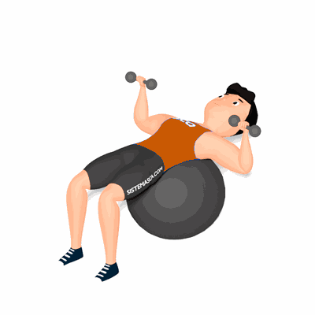

Supino com Halteres na Bola Suíça

Exercício para fortalecimento e hipertrofia da região peitoral, trabalhando os peitorais maiores e menores. Realiza com o auxílio de uma bola suíça é necessário atenção a postura.
Ficha Técnica
Tipo: Musculação
Grupo Muscular: Peito
Aparelho: Nenhum
Músculos: Nenhum
Como realizar
- Pegue dois halteres, posicione os pés apoiados no solo, ligeiramente separados, criando uma base estável;
- Deite sobre a bola suíça com a região das escápulas;
- Segure os halteres próximos um do outro acima do peito com os cotovelos estendidos;
- flexionar os cotovelos, descendo os pesos simultaneamente até ficarem próximos ao peito;
- Com a força dos músculos peitorais, empurre os pesos para cima retornando à posição inicial;
- Repita os movimentos, conforme o número de repetições orientado pelo professor.
 RC STORE
RC STORE